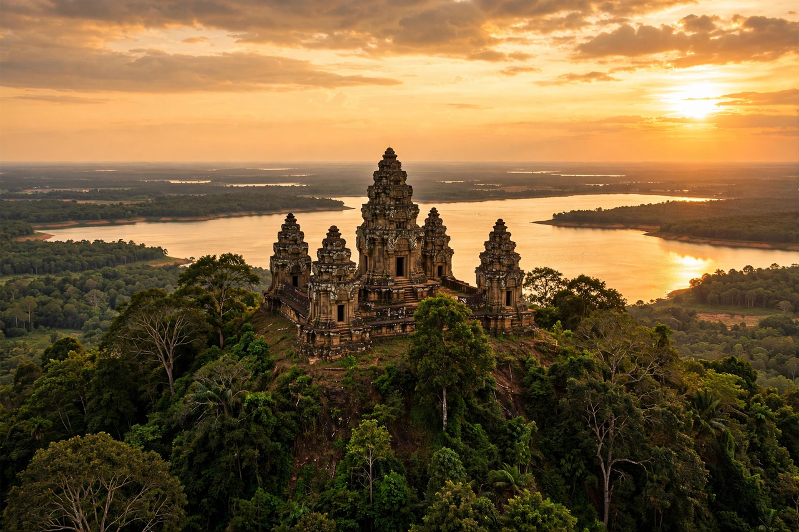

| Yasodharapura | |
|---|---|
| Location | Near modern Siem Reap, Cambodia |
| Founded | Late 9th century AD |
| Founder | Yasovarman I |
| Centre | Phnom Bakheng temple-mountain |
| Succeeded by | Later capitals at Angkor (Angkor Thom) |

Yasodharapura (Khmer: យសោធរបុរ) was the capital city of the Khmer Empire founded by King Yasovarman I at the end of the 9th century AD, in the area now known as Angkor in Cambodia. The name means "the city that bears glory." Centred on the temple-mountain of Phnom Bakheng, it was the first great capital built on the Angkor plain, and the city in some form remained the empire's heart for some six centuries.
Yasovarman I, who came to the throne about 889, moved the capital from Hariharalaya (the Roluos area) north-west to the Angkor plain. There he built Phnom Bakheng, a natural hill crowned with a sandstone pyramid temple representing Mount Meru of Hindu cosmology, and dedicated it to Shiva in the form of the royal linga Yasodharesvara. East of the city he excavated the Yasodharatataka, the enormous reservoir known today as the East Baray, some 7.5 km long, whose waters supported the capital's rice agriculture.
The city was organised around the Bakheng as its cosmic and ceremonial centre, with the royal palace and administrative quarters nearby. Yasovarman also founded a hundred ashramas (religious rest-houses) across his empire and raised temples including Lolei, Phnom Bok and Phnom Krom. Later kings repeatedly refounded and enlarged the capital on the same site: its most famous later incarnations include the city of Suryavarman II, builder of Angkor Wat just to the south, and Jayavarman VII's walled capital of Angkor Thom, whose centre, the Bayon, stands a short distance north of the Bakheng.
Following the sack of Angkor by Ayutthaya in 1431, the Khmer court gradually shifted south to the Phnom Penh and Lovek region, and Yasodharapura's urban core was largely abandoned to the forest, though Angkor Wat continued as a Buddhist pilgrimage site. The ruins today form part of the Angkor Archaeological Park, a UNESCO World Heritage Site. Modern remote sensing, including lidar surveys, has revealed the extensive low-density urban grid that once spread from the monumental centre.